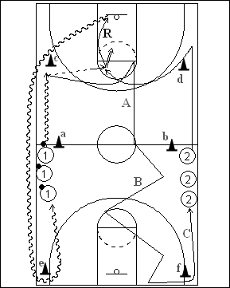

Catégorie : ECHAUFFEMENT (Ech-013)
Déroulement
- Deux files de joueurs au niveau de la ligne médiane à hauteur des cônes a et b. Les ballons sont dans la file 1.
- Les premiers joueurs des files 1 et 2 partent en même temps. Le premier joueur de la file 1 dribble jusqu’au cône c et passe au premier joueur de la file 2 qui s’est démarqué après passage derrière le cône d. Le premier joueur de la file 2 shoote, effectue son rebond et dribble derrière les cônes c et e. Après sa passe, le premier joueur de la file 1 sprinte pour toucher la ligne des lancers-francs puis la ligne médiane (A); il effectue ensuite des glissements défensifs jusqu’à la baseline (B).
- 2 va en dribble dans la file 1 et 1 contourne f et va en 2 (C).
Coaching points
- Veiller à ce que les deux joueurs partent chaque fois en même temps.
- Après 2 ou 3 minutes, placer les ballons dans la file 2.